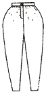
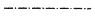
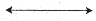
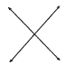
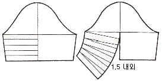

패션디자인산업기사 (2018-09-15 기출문제)
1과목: 피복재료학
1. 양모섬유의 손질에 관한 설명 중 틀린 것은?
- 중성세제로 가볍게 세탁하며, 알칼리 세제를 피해야 한다.
- 백색은 황변할 수 있으므로 직사광선을 피해야 한다.
- 염소계 산화표백제를 사용하며, 짙은 용액에도 용해된다.
- 장기간 보관할 때는 방충제와 함께 밀폐된 용기에 넣어 두는 것이 좋다.
(정답률: 64%)

2. 마섬유에 대한 설명으로 틀린 것은?
- 황마는 내후성이 우수하여 대기, 일광, 습기에 의한 강도변화가 거의 없다.
- 모시섬유의 단면은 타원형에 가깝고 큰 중공이 있다.
- 아마는 염색성은 면과 같으나, 분자배향이 잘 되어 있어 염색속도는 면보다 느리다.
- 대마는 표백하거나 알칼리와 가열하면 손상되므로 백색섬유를 얻기 어렵다.
(정답률: 34%)
3. 견섬유의 단면구조가 삼각형인 것과 가장 밀접한 관계가 있는 것은?
- 광택
- 강신도
- 염색성
- 흡습성
(정답률: 64%)
4. 다음 중 양모섬유의 성질이 아닌 것은?
- 강도는 천연섬유 중 약하다.
- 신도는 30% 내외로 크다.
- 탄성과 레질리언스가 우수하다.
- 초기탄성률이 크다.
(정답률: 26%)
5. 염색에 대한 설명 중 틀린 것은?
- 안료는 주로 날염에 이용되며 마찰에 대한 내구성이 좋지 않다.
- 침염에서 직물이나 편성물에 염색하는 것을 후염이라 한다.
- 홀치기는 일종의 방염법이다.
- 롤러 날염은 날인속도가 느려서 대량생산에 부적합하다.
(정답률: 22%)
6. 수분율이 적은 섬유로 만든 의복의 특징이 아닌 것은?
- 건조가 빠르다.
- 형태안정성이 좋다.
- 정전기가 적게 발생한다.
- 땀을 흘렸을 때 불쾌하다.
(정답률: 47%)
7. 나일론과 폴리에스터 섬유의 특성 중 공통점에 해당하는 것은?
- 염색이 쉽다.
- 세탁 시 다른 직물의 염료를 흡착한다.
- 레질리언스가 좋다.
- 일반적인 환경에서 내일광성이 우수하다.
(정답률: 48%)
8. 다음 직물과 조직이 올바르게 연결된 것은?
- 타올-농직
- 피케-이중직
- 양단-평직
- 태피터(taffeta)-수자직
(정답률: 30%)
9. 직물 및 편성물의 필링성에 대한 설명 중 틀린 것은?
- 섬유의 강도가 낮을수록 더 많이 생긴다.
- 섬유나 실의 일부가 표면에서 뭉쳐 생기는 작은 덩어리를 말한다.
- 섬유 꼬임이 많을수록 적게 생긴다.
- 직물의 조직이 치밀할수록 덜 생긴다.
(정답률: 27%)
10. 섬유나 내연성에 관한 설명 중 틀린 것은?
- 면, 마 등 식물성 섬유는 연소 시 종이 타는 냄새가 나며 회색의 재가 남는다.
- 한계산소지수(LOI)가 20 이하면 가연성 섬유이다.
- 섬유의 연소 특성은 실이나 직물의 구성방법에 따라 달라진다.
- 아크릴, 아라미드, 염화비닐 섬유는 내연성 섬유이다.
(정답률: 44%)
11. 제직할 때 두 개의 경사 빔의 장력을 달리해서 경사방향으로 요철의 줄무늬를 이루는 직물은?
- 크레이프
- 포플린
- 서어지
- 시어서커
(정답률: 47%)
12. 현미경으로 보았을 때 면섬유의 형태적 특징이 아닌 것은?
- 단세포로 되어 있다.
- 천연꼬임을 가지고 있다.
- 중앙에 중공이 있다.
- 곳곳에 마디가 있다.
(정답률: 32%)
13. 실의 굵기를 표시하는 것 중 항중식 번수에 해당하는 것은?
- 데니어(Denier)
- 텍스(Tex)
- 영국식 면사번수(‘S)
- 데시텍스(Deci tex)
(정답률: 50%)
14. 폴리우레탄 섬유와 고무의 가장 큰 차이점을 나타내는 것은?
- 염색성
- 탄성
- 강도
- 신도
(정답률: 27%)
15. 실의 종류에 따른 실의 굵기를 표시하는 방법으로 옳은 것은?
- 면사-항중식 번수
- 마사-항장식 번수
- 견사-항중식 번수
- 모사-항장식 번수
(정답률: 46%)
16. 다음 중 섬유의 분류가 틀린 것은?
- 단백질 섬유-견
- 셀룰로스 섬유-면
- 광물성 섬유-석면
- 합성섬유-케이폭(Kapok)
(정답률: 34%)
17. 다음 중 섬유의 주성분이 -(CH2-CH2)n-로 형성된 것은?
- 비닐론
- 아크릴
- 폴리프로필렌
- 폴리에틸렌
(정답률: 27%)
18. 다음 중 재봉사로 적합하지 않는 것은?
- 단사
- 2합연사
- 3합연사
- 6합연사
(정답률: 40%)
19. 다음 중 청바지 소재로 가장 적합한 것은?
- 데님
- 개버딘
- 태피터
- 다마스크
(정답률: 63%)
20. 다음 중 사용염료와 섬유의 연결이 틀린 것은?
- 직접염료-셀룰로스 섬유
- 산성염료-나일론 섬유
- 염기성연료-천연섬유
- 분산염료-폴리에스터
(정답률: 41%)
2과목: 패션디자인론
21. 디자인 요소가 중심점을 기준으로 방향을 바꾸어 반복됨으로써 얻어지는 리듬으로, 두로 선에 의하여 형성되는 것은?
- 단순반복 리듬
- 교대반복 리듬
- 연속 리듬
- 방사상 리듬
(정답률: 28%)
22. 선에 의한 착시현상에 대한 설명으로 옳은 것은?
- 세로선에 의하여 분할된 면은 분할되지 않은 면과 같아 보인다.
- 가로선에 의하여 분할 된 면은 분할되지 않은 면에 비하여 폭이 좁아 보인다.
- 세로선에 의하여 분할된 면은 분할되지 않은 면에 비하여 길어 보인다.
- 가로선에 의하여 분할 된 면은 상대적인 지각에 따라 길이는 같아 보인다.
(정답률: 50%)
23. 비례의 원리를 색체에 적용할 때의 설명으로 옳은 것은?
- 액세서리류와 같이 적은 면적의 강조색채는 대비효과가 작다.
- 배색되는 색채 중 어느 한 색채가 보다 넓은 면적을 차지하여 주색체를 이루고, 나머지는 주색체를 보완, 강조하는 부색채가 되도록 한다.
- 배색하려는 두 면의 면적차에 따라 면적이 비슷할 때는 대비조화를 사용한다.
- 옷감의 무늬와 같이 여러 색체가 함께 사용될 때에는 색상 또는 명도별로 나누어 비례의 원리를 적용시킬 수는 없다.
(정답률: 38%)
24. 다음 중 십장생 문양에 해당하는 것은?
- 용
- 사슴
- 봉황
- 박쥐
(정답률: 44%)
25. 문양의 배열 중 의복의 어느 부분에 문양을 배치할 것인지를 잘 조절해야 하며, 평상복으로는 강한 이미지를 주기 때문에 특수한 느낌을 필요로 하는 디자인에 활용하는데 가장 적합한 것은?
- 가장자리(border)
- 공간(spaced) 배열
- 전체(all-over) 배열
- 사방(four-way) 배열
(정답률: 40%)
26. 다음 중 인체 프로모션(propotion)에서 등신의 구분 기준에 가장 적합한 것은?
- 머리의 길이
- 몸통에서 B.P점까지의 길이
- 손길이
- 발길이
(정답률: 41%)
27. 다음 중 복식의 표현적 기능이 가장 강조되는 의복은?
- 이브닝 드레스
- 일상복
- 테니스복
- 우주복
(정답률: 46%)
28. 색감각의 설명으로 옳은 것은?
- 전자파와 자외선 중간에 존재하는 파장만 볼 수 있는데 이를 가시광선이라 한다.
- 빛이나 색채의 자극은 원인이 되고 색채감각은 결과가 된다.
- 단파장에는 초저주파, 우주선, 감사선, 엑스선, 자외선, 적외선, 전자파 등이 있다.
- 가시광선 중에서 적색(red)은 가장 짧은 파장을 가지고 진동수도 가장 적다,
(정답률: 41%)
29. 다음 중 키가 큰 체형에 어울리지 않는 디자인은?
- 내추럴 웨이스트보다는 하이 웨이스트를 선택한다.
- 상ㆍ하의를 보색대비로 이용하는 것이 효과적이다.
- 어두운 색상의 과감한 스타일의 가방이나 브로치(brooch)를 착용한다.
- 상ㆍ하의를 과감히 나누는 수평적인 느낌의 무늬나 요크를 이용하는 것이 좋다.
(정답률: 27%)
30. 패션디자인의 방법 중 체계적 접근 방법(systematic approach)의 설명으로 틀린 것은?
- 의사 결정 단계에 적용하는 방법이다.
- 정보를 처리하는 과정을 거치면서 객관적이고 합리적인 방법으로 진행한다.
- 수렴적 사고, 분석적 사고, 수직적 사고로서 종합, 분석, 평가의 과정을 거친다.
- 디자이너의 지식 및 경험 등의 정보와 창조력, 통찰력을 기초로 하는 방법이다.
(정답률: 30%)
31. 다음 중 점진(gradation)적 리듬이 아닌 것은?
- 줄무늬에서 무늬의 굵기가 점차적으로 굵거나 가늘어지는 경우
- 색채가 점차적으로 진하거나 흐려지는 경우
- 단위 사이의 거리가 점차 멀어지거나 가까워지는 경우
- 선이 교대로 반복되는 경우
(정답률: 57%)
32. 다음 중 일정한 넓이의 레이스나 원단의 중심부에 개더나 주름을 잡아 생기는 장식으로 의복의 블라우스 앞중심이나 드레스의 깃, 소매밑단 등에 달며 남자의 연주복 블라우스에 많이 활용되는 디테일은?
- 플라운스(flounce)
- 턱(tuck)
- 루슈(ruche)
- 스칼럽(scallop)
(정답률: 30%)
33. 다음 그림의 팬츠(pants) 스타일에 해당하는 것은?

- 니커보커즈(knickerbockers)
- 페그 톱 팬츠(peg-top (pants)
- 토레도 팬츠(toreador (pants)
- 가우초 팬츠(gaucho (pants)
(정답률: 44%)
34. 미래적인 이미지 표현에 적합한 질감으로 차고 기계적인 광택감이 있는 소재의 느낌은?
- 벌키(bulky)
- 크리습(crisp)
- 스티프(stiff)
- 메탈릭(metallic)
(정답률: 46%)
35. 패션 아이템 중 드레스 종류에 대한 설명이 틀린 것은?
- 색 드레스(sack dress)-웨이스트 라인에 이음선이 없는자루 모양의 드레스
- 슈미즈 드레스(chemise dress)-허리선을 조이지 않고 직선으로 흘러내리는 드레스
- 내로 드레스(narrow dress)-좁고 가는 실루엣의 홀쭉한 형태의 드레스
- 던들 드레스(dirndl dress)-저녁 모임을 위한 예장용 드레스
(정답률: 40%)
36. 다음 중 패션 디자인의 조건에 대한 설명으로 틀린 것은?
- 심미성을 갖추어야 한다.
- 창조성이 있어야 한다.
- 합목적성을 갖추어야 한다.
- 경제성을 고려할 필요는 없다.
(정답률: 48%)
37. 다음 중 기업에서 디자이너가 작업지시서에 주로 사용하는 것은?
- 착장화
- 도식화
- 자태화
- 예상도
(정답률: 60%)
38. 다음 중 페일 톤(pale tone)으로 표현이 가장 적합한 패션 이미지는?
- 클래식(classic)
- 로맨틱(romantic)
- 아방가르드(avant-garde)
- 모던(modem)
(정답률: 58%)
39. 대비색상조화의 설명 중 틀린 것은?
- 동일색상조화나 유사색상조화에 비하여 배색방법이 쉽다.
- 보색관계에 있는 색상들을 대비시켜 이루는 조화이다.
- 강렬하며 현대감각에 맞는 아름다음을 표현할 수 있다.
- 보색조화, 분보색조화, 3각조화 등이 효과적이다.
(정답률: 27%)
40. 형태를 나타내는 단어 중 면으로 둘러싸인 3차원의 면적으로 정의되는 것은?
- 평면형(shape)
- 입체형(form)
- 여백(space)
- 선(line)
(정답률: 55%)
3과목: 의류상품학 및 복식문화사
41. 고려시대 여자들이 착용한 포(砲)에 대한 설명 중 틀린 것은?
- 백저포 안에는 유(儒)와 상(裳)을 입었다.
- 귀부녀들은 고(袴)를 입었다.
- 포는 백저로 하여 입었으며 그 제도가 남자의 포와는 전혀 달랐다.
- 포에 감람나무 문양이 있는 허리띠를 매었다.
(정답률: 39%)
42. 고대 이집트 후기 복식의 특징이 아닌 것은?
- 로인클로스(loincloth)의 길이가 길어졌다.
- 옷의 품이 좁아졌다.
- 얇은 옷감이 출현되었다.
- 의상의 가장자리에 선(band)이나 술(tassel) 장식했다.
(정답률: 38%)
43. 고대 그리스 복식 중 도릭 키톤(doric chiton)의 일종으로, 한쪽 어깨에만 걸치는 것은?
- 아포티그마(apotigma)
- 콜로브스(kolobos)
- 엑조미스(exomis)
- 콜포스(kolpos)
(정답률: 29%)
44. 고대 로마 복식에 대한 설명으로 옳은 것은?
- 고대 로마의 복식문화는 고대 그리스와 메소포타미아의 특성을 모방하였다.
- 고대 로마의 대표적인 의상은 히마티온이었다.
- 여성의 사회적 지위는 매우 중요하여 여자의 복식이 발달하였다.
- 토가는 작용방법과 색에 따라 신분 구별이 있었다.
(정답률: 22%)
45. 디스플레이 종류 중 고객이 매장에 들어와서 구격을 하다가 구매행동으로 바뀌도록 하는 데 가장 많은 영향을 주는 것은?
- 윈도 디스플레이
- 리모트 디스플레이
- 내부 디스플레이
- 외부 디스플레이
(정답률: 40%)
46. 마케팅믹스 중 기존상품 개량, 신상품 개발 및 현재 취급하고 있는 상품의 구색에 변화를 가져오게 하는 조치 등을 포함하는 것은?
- 제품계획
- 가격구조
- 판매촉진활동
- 유통구조
(정답률: 35%)
47. 최초로 기성복 사이즈 기준을 확립해 기성복 산업의 기초를 구축한 나라는?
- 프랑스
- 영국
- 이탈리아
- 미국
(정답률: 35%)
48. 다음 중 고대 그리스의 클라미스가 고대 로마를 거쳐 비잔틴 복식의 기본적인 의복이 된 것은?
- 팔루다맨틈(paludamentum)
- 달마티카(dalmatica)
- 튜닉(tunic)
- 팔라(palla)
(정답률: 22%)
49. 삼국시대 관모 중에서 가장 오래되고 가본적인 형태로서, 주로 헝겊을 재료로 하였으며 상투머리가 흘러내려 오는 것을 감싸는 것은?
- 입(笠)
- 건(巾)
- 책(幘)
- 절풍(折風)
(정답률: 50%)
50. 스커트를 넓게 퍼지도록 하기 위해 입었던 말총이나 고래수염으로 만든 딱딱한 페티코트나 버팀살을 넣은 스커트는?
- 버슬
- 크리놀린
- 엠파이어
- 로맨틱
(정답률: 40%)
51. 다음 중 현대의 패션산업의 특성에 해당되지 않는 것은? (문제 오류로 가답안 발표시 1번으로 발표되었지만 확정답안 발표시 1, 3번이 정답처리 되었습니다. 여기서는 1번을 누르면 정답 처리 됩니다.)
- 노동집약 산업
- 부가가치 산업
- 소비지향 산업
- 감각 산업
(정답률: 46%)
52. 아르누보 양식의 복식으로 여성의 힙을 최대한 과장되게 부풀린 실루엣은?
- 엠파이어 스타일
- 로맨틱 스타일
- 크리놀린 스타일
- 버슬 스타일
(정답률: 40%)
53. 패션제품 수명주기 중 가장 투자규모가 많은 단계는?
- 도입기
- 성장기
- 성숙기
- 쇠퇴기
(정답률: 44%)
54. 표적 고객 설정에서 세분화를 적용하는 기준으로 패션 수용도별 분류에 해당하는 것은?
- advanced, up-to-date, new-established
- prestige, better, volume low
- trend, new basic, basic
- public stage, private stage
(정답률: 38%)
55. 중세 말기의 장신구로 십자군 전쟁 시 기사의 표시로 시작되었던 문장(heraldry)이 복식에 끼친 영향에 해당하는 것은?
- 재단의 발달
- 봉제의 발달
- 자수의 발달
- 직물의 발달
(정답률: 50%)
56. 마케팅 관리의 발전단계 순서로 옳은 것은?
- 생산지향 단계→판매지향 단계→마케팅 지향단계→사회적 책임과 인간지향 단계
- 판매지향 단계→마케팅지향 단계→생산지향 단계→사회적 책임과 인간지향 단계
- 마케팅지향 단계→생산지향 단계→판매지향 단계→사회적 책임과 인간지향 단계
- 사회적 책임과 인간지향 단계→생산지향 단계→판매지향 단계→마케팅지향 단계→사회적 책임과 인간지향 단계
(정답률: 48%)
57. 레이어드 룩(layered look)이 일반화되고 진(jeans) 차림이 계속 붐을 이룬 시기는?
- 1950년대
- 1960년대
- 1970년대
- 1980년대
(정답률: 34%)
58. 패션산업의 구조에서 유통단계에 해당하는 것은?
- 소매상
- 원사메이커
- 제직회사
- 어패럴메이커
(정답률: 52%)
59. 패션상품의 판매가격을 결정하는 요인으로 가장 거리가 먼 것은?
- 브랜드 이미지
- 판매방법
- 디자이너의 명성도
- 문화적 요인
(정답률: 38%)
60. 다음 중 디스플레이의 전개수단이 아닌 것은?
- 패션쇼
- 연출구도
- 소도구
- 조명
(정답률: 50%)
4과목: 패턴공학 및 의복구성학
61. 원형의 보정방법에 대한 설명 중 가장 거리가 먼 것은?
- 등이 굽은 체형은 뒷길의 부족 부분을 절개하여 늘려주고 앞길의 가슴 여유분을 접고, 옆선의 여유분을 줄인다.
- 소매 뒤에 주름이 생길 때는 소매산 중심을 앞 소매 쪽으로 옳기고, 소매산 둘레의 곡선을 수정한다.
- 복부가 나온 체형은 뒤에 남는 부분은 접어서 줄이고, 밑 파임 곡선을 조금 더 파 준다.
- 엉덩이가 처진 체형은 뒤 허리선을 내려주고, 뒤 다트 길이를 길게 한다.
(정답률: 27%)
62. 제도에 필요한 부로 중 안단선에 해당하는 것은?


(정답률: 48%)
63. 올이 잘 풀리지 않는 옷감에 이용되며 시접 가장자리를 핑킹가위로 자르는 솔기는?
- 접어박기 가름솔
- 휘갑치기 가름솔
- 핑크드 가름솔
- 오버록솔
(정답률: 44%)
64. 봉제 시 윗실이 끊어지는 경우의 원인이 아닌 것은?
- 실 끼우는 방법이 틀렸을 경우
- 윗실조절기의 윗실조정이 강할 경우
- 재봉기를 반대 방향으로 돌렸을 경우
- 톱니가 밑으로 내려간 경우
(정답률: 25%)
65. 인체의 기준면 중 인체를 앞ㆍ뒤의 두 부분으로 나누는 모든 면은?
- 정중면(median plane)
- 시상면(sagittal plane)
- 관상면(frontal plane)
- 수평면(horizontal plane)
(정답률: 30%)
66. 의복구성을 위한 인체계측의 기준선에서 어깨가쪽점과 앞겨드랑점, 뒤겨드랑점을 통과하는 곡선은?
- 진동둘레선
- 어깨솔기선
- 목밑둘레선
- 가슴둘레선
(정답률: 59%)
67. 그레이딩을 위한 공정 순서로 옳은 것은?
- 패턴메이킹→그레이딩→마킹
- 마킹→그레이딩→패턴메이킹
- 그레이딩→마킹→패턴메이킹
- 패턴메이킹→마킹→그레이딩
(정답률: 46%)
68. 접착심시 공정의 조건에 대한 설명 중 틀린 것은?
- 온도와 압력을 높이면 일정 범위에서는 접착력이 올라간다.
- 압력이 높으면 역삼출 현상의 발생 위험이 있다.
- 겉감과 심지의 열수축률이 다르면 바블 현상이 일어난다.
- 접착 후 형태고정을 위해 천천히 냉각시켜야 한다.
(정답률: 34%)
69. 대량생산 레이아웃(layout)의 구성 원칙에 대한 설명 중 틀린 것은?
- 흐름대와 작업 보조대는 일반적으로 왼쪽에서 재료를 잡을 수 있도록 배치한다.
- 물품운반거리는 작업 활동에 지장을 주지 않는 적절한 면적 내에서 짧게 한다.
- 공정순서에 따라 앞ㆍ뒤 몸판 등 주 공정의 가공과 조립을 먼저 완성하고 칼라, 커프스, 포켓 등 부속 공정이 완성되도록 배치한다.
- 유연성이 있는 기계의 배치를 통해 생산계획의 변경이 생겨도 기본흐름은 흔들리지 않도록 한다.
(정답률: 31%)
70. 제도에 필요한 부호 중 다음의 의미는?

- 바이어스 방향 표시
- 늘림 표시
- 직각 표시
- 오그림 표시
(정답률: 59%)
71. 수작업에 많이 이용되며 사하 좌우로 기본 패턴의 바깥 선을 평행 이동시켜 필요한 사이즈를 그려 나가는 그레이딩 방법은?
- 레이얼 시프트(radial shuft)법
- 시프트 벨류(shift value)법
- 트랙 시프트(track shift)법
- 푸시 앤 풀(push & pull)법
(정답률: 27%)
72. 척주(vertebral column)에 대한 설명 중 틀린 것은?
- 중심축으로 S자형 커브를 형성한다.
- 경추, 흉추, 요추, 선골, 미골로 세분된다.
- 척주는 32~34개의 추골로 구성되어 있다.
- 척주에서의 계측점은 제6경주, 제8흉추, 제3요추이다.
(정답률: 31%)
73. 재봉기의 고장항목 중 천보내기 타이밍이 불안정한 경우의 원인에 해당하는 것은?
- 노루발의 압력이 약함
- 톱니의 마모
- 톱니의 수평상태 불안정
- 노루발과 톱니의 접촉상태 불량
(정답률: 14%)
74. 다음 중 오그림 처리를 해야 할 부분이 아닌 곳은?
- 뒤판 어깨선
- 소매산
- 암홀 라인
- 소매 팔꿈치
(정답률: 31%)
75. 다음 중 바이어스로 재단해야 하는 부위는?
- 테일러드 칼라의 겉 칼라
- 노슬리브 드레스의 진동둘레 안단
- 입술 포켓의 입술감
- 포켓의 주머니감
(정답률: 38%)
76. 오건디(organdy)로 블라우스를 만들고자 할 때 사용하기에 가장 적합한 재봉기 바늘의 호수는?
- 9호
- 11호
- 14호
- 16호
(정답률: 40%)
77. 다음 중 프린세스 라인의 원피스를 재단할 때 프린세스 라인의 가장 적합한 시접 분량은?
- 0.3cm 미만
- 0.3~0.5cm
- 1~1.5cm
- 3~4cm
(정답률: 48%)
78. 턱킹(tucking)에 대한 설명으로 옳은 것은?
- 칼라, 커프스, 포켓 등의 가장자리에 장식하는 바느질이다.
- 가로 혹은 세로 방향으로 옷감에 주름을 접어 일정한 간격으로 박아 장식하는 바느질이다.
- 얇은 옷감으로 주름을 잡는 부드러운 옷감에 장식하는 바느질이다.
- 코트나 재킷의 안 포켓 입구에 지그재그 모양으로 장식하는 바느질이다.
(정답률: 46%)
79. 다음 그림에 해당하는 소매의 명칭은?

- 랜턴 슬리브(lantern sleeve)
- 호리존틀 풀니스 슬리브(horizontal fullness sleeve)
- 크레센트 슬리브(crescent sleeve)
- 레그 오브머튼 슬리브(leg of mutton sleeve)
(정답률: 34%)
80. 재킷을 재단할 때 시접을 가장 적게 두어야 할 부분은?
- 재킷단
- 어깨선
- 목둘레선
- 옆선
(정답률: 50%)